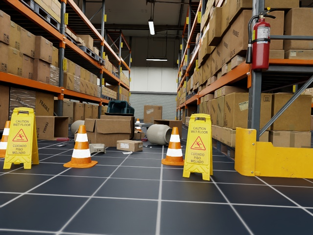
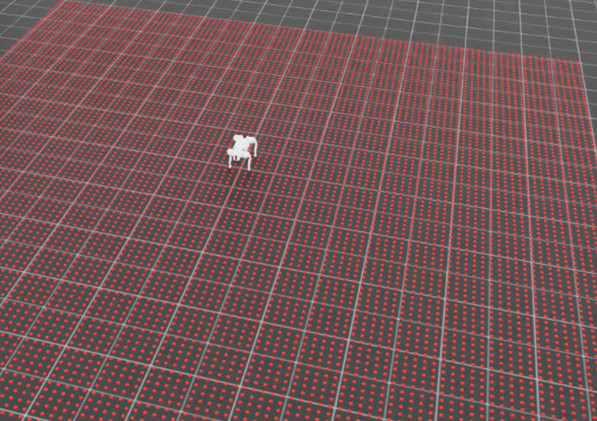
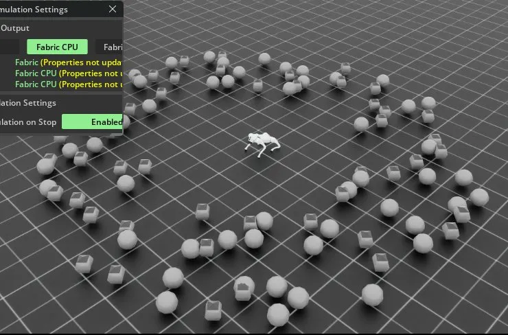
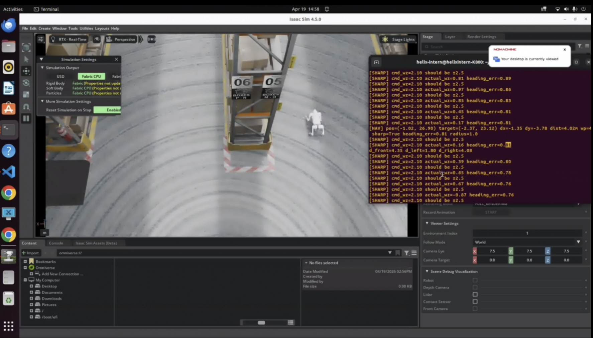

Engineering Objective
A digital twin of a unitree go2 quadruped is given a specific object – in this case, a “slipping cone” for testing purposes. The robot’s goal is to navigate through a warehouse environment with sharp turns and narrow corridors to find this object in simulation
This demonstrates the practical use of AI in robot guidance, navigation, and location in environments where reliable and automated object location systems are necessary
YOLOv8 ROS2 Object Detection & Localization
My first objective was to develop reliable object detection and localization. I used a YOLOv8 model to detect a yellow caution sign from the Unitree Go2's RGB-D camera feed.
I created a ROS2 module to capture approximately 700 images for training, validation, and testing. The final perception node combines YOLOv8 detection, depth sampling, temporal filtering, 3D coordinate reconstruction, tf2 coordinate transformation, and RViz2 visualization.
Pipeline: Detect object → determine bounding-box center → obtain depth → reconstruct camera-frame position → transform into map coordinates → filter repeated detections → publish persistent object location.


YOLOv8 returns a bounding box around the detected object. The center of this box becomes the image-space coordinate (u, v).
The RGB-D camera also provides the depth Z, while ROS2's CameraInfo topic provides the intrinsic camera parameters.
[ fx 0 cx ]
[ 0 fy cy ]
[ 0 0 1 ]
fx and fy are the camera focal lengths expressed in pixels. cx and cy define the principal point of the image.
def camera_info_callback(self, msg: CameraInfo):
K = msg.k
self.fx = K[0]
self.fy = K[4]
self.cx = K[2]
self.cy = K[5]
# Camera intrinsics remain constant,
# so the subscription is no longer needed.
self.destroy_subscription(self.cam_info_sub)v = (y₁ + y₂) / 2
YOLO provides the upper-left and lower-right corners of the detected bounding box. Averaging these values gives the approximate center of the object in image coordinates.
x1, y1, x2, y2 = map(int, box.xyxy[0])
# Bounding-box center in pixel coordinates
u = (x1 + x2) // 2
v = (y1 + y2) // 2Instead of trusting one depth pixel, I sample a small 5 × 5 neighborhood around the bounding-box center. Invalid and zero-valued measurements are removed, and the median remaining depth value is used as Z.
Using the median makes the localization system less sensitive to individual noisy depth pixels.
def get_stable_depth(self, u, v, window=5):
h, w = self.depth_image.shape
half = window // 2
umin = max(0, u - half)
umax = min(w, u + half + 1)
vmin = max(0, v - half)
vmax = min(h, v + half + 1)
patch = self.depth_image[
vmin:vmax,
umin:umax
].astype(np.float32)
# Remove invalid measurements
patch = patch[np.isfinite(patch)]
patch = patch[patch > 0]
if len(patch) == 0:
return None
return np.median(patch)The difference between the detection and the camera's principal point gives the object's pixel displacement from the optical center.
Δv = v - cy
Using the pinhole-camera model and measured depth Z, the object can then be reconstructed in the camera coordinate frame.
Yc = ((v - cy) Z) / fy
Zc = Z
The resulting point (Xc, Yc, Zc) represents the object's three-dimensional position relative to the front camera.
def compute_global_position(self, u, v, Z):
# Pixel coordinate -> camera-frame position
Xc = (u - self.cx) * Z / self.fx
Yc = (v - self.cy) * Z / self.fy
point_cam = PointStamped()
point_cam.header.frame_id = "unitree_go2/front_cam"
point_cam.header.stamp = self.get_clock().now().to_msg()
point_cam.point.x = Xc
point_cam.point.y = Yc
point_cam.point.z = float(Z)The reconstructed point initially exists relative to the robot's front camera. This coordinate moves whenever the robot moves, so it cannot be used directly as a persistent object location.
[ Yc ]
[ Zc ]
[ 1 ]
ROS2 tf2 provides the transformation between the front camera frame and the global map frame. Applying that transform converts the camera-relative detection into a fixed coordinate in the simulated warehouse.
transform = self.tf_buffer.lookup_transform(
"map",
"unitree_go2/front_cam",
rclpy.time.Time()
)
point_map = do_transform_point(
point_cam,
transform
)
return point_mapThe detection, depth filtering, camera reconstruction, and tf2 transformation are combined inside the YOLO image callback.
# YOLO bounding box
x1, y1, x2, y2 = map(int, box.xyxy[0])
# Bounding-box center
u = (x1 + x2) // 2
v = (y1 + y2) // 2
# Obtain stable depth around the center pixel
Z = self.get_stable_depth(u, v)
if Z is None:
continue
# Convert millimeters to meters when required
if self.depth_image.dtype == np.uint16:
Z /= 1000.0
# Pixel + depth -> camera frame -> map frame
point_map = self.compute_global_position(
u,
v,
Z
)
# Store transformed measurement
track["positions"].append(
point_map.point
)A single YOLO detection is not immediately accepted as a real object. The same detection must appear repeatedly across frames before its global position is recorded.
After a track reaches the required detection count, several independent global position estimates are collected and averaged.
ȳ = (1/N) Σ yi
z̄ = (1/N) Σ zi
This reduces frame-to-frame localization noise before the object is saved as a persistent map location.
# Require repeated detections
if track["hits"] < self.min_hits or track["saved"]:
continue
# Store repeated transformed positions
track["positions"].append(point_map.point)
# Average several independent measurements
if len(track["positions"]) >= 5:
avg = Point()
avg.x = np.mean([
p.x for p in track["positions"]
])
avg.y = np.mean([
p.y for p in track["positions"]
])
avg.z = np.mean([
p.z for p in track["positions"]
])
pose = Pose()
pose.position = avg
pose.orientation.w = 1.0Before saving the position, the new detection is compared against previously stored caution-sign locations.
If another stored object is within the merge radius, the detection is treated as the same object rather than creating a duplicate map entry.
def is_new_pose(self, x, y):
for pose in self.saved_poses:
dx = pose.position.x - x
dy = pose.position.y - y
dist = math.sqrt(
dx * dx +
dy * dy
)
if dist < self.merge_radius_m:
return False
return TrueThe resulting ROS2 module converts a raw RGB-D camera stream into stable, persistent object locations in the global map frame. Detected caution signs can then be published as a PoseArray and visualized in RViz2 for use by later navigation and autonomy systems.
Walking Policy
The next objective was to train a reinforcement-learning policy for stable quadruped walking. The Unitree Go2 requires coordinated control across 12 joints: four hip joints, four thigh joints, and four calf joints.
The policy outputs a 12-dimensional action vector that is converted into joint-position targets. I shaped the reward function to encourage forward velocity tracking, smooth body motion, balanced leg participation, stable ground contact, and symmetric motion between the left and right legs.
Pipeline: RL action vector → joint scaling and sign correction → smoothed joint targets → contact and motion measurement → reward / penalty calculation → policy update.

At every policy step, the reinforcement-learning agent produces a 12-dimensional action vector:
Each action corresponds to one leg joint. Before the command is sent to the robot, I apply joint-specific sign corrections and scaling factors. This allows the same normalized RL action range to produce appropriate angular motion for hips, thighs, and calves.
Here, S is the action-sign vector, G is the joint scaling vector, and ⊙ represents element-wise multiplication.
def _build_action_sign(self):
sign = torch.ones(12, device=self.device)
# Hip joints
sign[0] = -1.0
sign[1] = -1.0
sign[2] = -1.0
sign[3] = -1.0
# Thigh joints
sign[4:8] = 1.0
# Calf joints
sign[8] = 1.0
sign[9] = 1.0
sign[10] = -1.0
sign[11] = -1.0
self.action_sign = sign.unsqueeze(0)
def _apply_action(self):
default = self.robot.data.default_joint_pos
if self.joint_targets is None:
self.joint_targets = default.clone()
# RL actions are limited to [-1, 1]
a = torch.clamp(self.actions, -1.0, 1.0)
if not hasattr(self, "action_sign"):
self._build_action_sign()
# Correct joint directions
a = a * self.action_sign
# Joint-specific motion scale
scale = torch.tensor(
[
0.05, 0.05, 0.05, 0.05, # hips
0.55, 0.55, 0.55, 0.55, # thighs
0.70, 0.70, 0.70, 0.70, # calves
],
device=self.device,
).unsqueeze(0)
desired = default + scale * a
# Hold hips near default orientation
desired[:, 0:4] = default[:, 0:4]Directly applying each new RL output produced abrupt joint motion, so I limited how quickly the commanded joint target could change between simulation steps.
This effectively acts as a joint-command slew-rate limiter, reducing twitching and encouraging smoother gait transitions.
# Prevent abrupt joint-target changes
max_delta = 0.10
delta = torch.clamp(
desired - self.joint_targets,
-max_delta,
max_delta
)
self.joint_targets = self.joint_targets + delta
self.robot.set_joint_position_target(
self.joint_targets
)A contact sensor attached to the feet provides the net contact force for each leg. The magnitude of this force is compared against a threshold to determine whether each foot is touching the ground.
0, otherwise
The same sensor also tracks each foot's current airtime. These values let the reward function distinguish between normal swing phases and legs that remain off the ground for too long.
data = self.feet_sensor.data
# Net contact force magnitude for each foot
Fmag = torch.linalg.norm(
data.net_forces_w,
dim=-1
)
thr = self.feet_sensor.cfg.force_threshold
# 1 = foot touching ground
# 0 = foot in the air
contacts = (Fmag > thr).float()
# Current swing duration of each foot
air_time = data.current_air_timeThe reward function evaluates how many feet are in contact with the ground and how many are actively in a swing phase.
A Gaussian-shaped reward favors approximately three simultaneous ground contacts while penalizing unstable configurations such as two-contact or zero-contact states.
I also rewarded a gait in which approximately one leg is in a meaningful swing phase while the robot continues making forward progress.
n_contact = contacts.sum(dim=1)
sigma_c = 0.35
# Reward approximately three feet contacting the floor
r_three = torch.exp(
-((n_contact - 3.0) / sigma_c) ** 2
)
# Penalize two-foot and zero-foot contact states
pen_two = torch.exp(
-((n_contact - 2.0) / sigma_c) ** 2
)
pen_air = torch.exp(
-((n_contact - 0.0) / sigma_c) ** 2
)
# Count legs that have been airborne long enough
t_swing = 0.12
num_swing = (
air_time > t_swing
).float().sum(dim=1)
r_one_swing = torch.exp(
-((num_swing - 1.0) / 0.25) ** 2
)The robot's world-frame velocity is transformed into the robot's body frame so the reward can measure forward, lateral, and vertical motion relative to the direction the robot is facing.
The forward velocity component is rewarded when it matches the commanded speed:
Lateral velocity is discouraged so that the robot moves in a straighter line instead of drifting sideways.
Vertical velocity is penalized to reduce hopping and excessive body oscillation.
v_b = self._lin_vel_body()
vx = v_b[:, 0]
vy = v_b[:, 1]
vz = v_b[:, 2]
vx_cmd = self.cmd[:, 0]
# Forward command tracking
r_vx = torch.exp(
-((vx - vx_cmd) / 0.15) ** 2
)
# Penalize sideways drift
r_lat = torch.exp(
-(vy / 0.20) ** 2
)
# Penalize vertical bouncing
vz_pen = vz ** 2To prevent the policy from relying heavily on only a subset of the legs, I measured the total joint motion of each leg using the absolute joint velocities of its hip, thigh, and calf.
The average motion across all four legs is:
Each leg's motion is then normalized against this mean:
qd = self.robot.data.joint_vel
leg_groups = torch.tensor(
[
[0, 4, 8], # Front Left
[1, 5, 9], # Front Right
[2, 6, 10], # Rear Left
[3, 7, 11], # Rear Right
],
device=self.device,
)
# Total motion of each leg
leg_motion = torch.sum(
torch.abs(qd[:, leg_groups]),
dim=2
)
# Mean motion across all four legs
mean_motion = leg_motion.mean(
dim=1,
keepdim=True
)
# Motion of each leg relative to the average
rel_motion = leg_motion / (
mean_motion + 1e-4
)A major failure mode during training was a "dead leg": one leg would contribute much less motion than the others while the remaining legs compensated for it.
I penalized legs whose motion dropped below 60% of the average motion:
I also tracked persistent low-motion states. If any leg remains below a motion threshold for roughly half a second, an additional stuck-leg penalty is activated.
# Penalize legs moving less than
# 60% of the average leg motion
dead_leg_pen = torch.relu(
0.6 - rel_motion
).sum(dim=1)
# Track persistent low-motion legs
self.leg_stuck_counter = torch.where(
leg_motion < 0.05,
self.leg_stuck_counter + 1,
torch.zeros_like(self.leg_stuck_counter)
)
# Convert 0.5 seconds into control steps
stuck_limit = 0.5 / (
self.cfg.sim.dt *
self.cfg.decimation
)
stuck_leg_pen = (
self.leg_stuck_counter > stuck_limit
).any(dim=1).float()Stable locomotion also required approximately symmetric motion between corresponding left and right legs.
I normalized the difference between the rear legs and between the front legs by the robot's average leg motion:
Rear-leg airtime was also compared directly so that one hind leg could not remain airborne significantly longer than its counterpart.
m_FL = leg_motion[:, 0]
m_FR = leg_motion[:, 1]
m_RL = leg_motion[:, 2]
m_RR = leg_motion[:, 3]
motion_scale = (
m_FL + m_FR + m_RL + m_RR
) / 4.0 + 1e-4
# Left/right motion symmetry
hind_imbalance = torch.abs(
m_RL - m_RR
) / motion_scale
front_imbalance = torch.abs(
m_FL - m_FR
) / motion_scale
# Rear-leg swing symmetry
hind_air_imbalance = torch.abs(
air_time[:, 2] -
air_time[:, 3]
)These terms were combined into one reward function. Positive terms encourage upright posture, correct body height, forward velocity, controlled yaw, and useful contact patterns. Negative terms discourage tilt, hopping, joint collapse, dead legs, and asymmetric gait behavior.
reward = (
2.0 * upright
+ 3.0 * r_height
# Body stability
- 6.0 * tilt_pen
- 3.0 * pitch_pen
- 3.0 * vz_pen
# Velocity tracking
+ 3.0 * r_vx
+ 3.0 * r_lat
+ 3.0 * r_yaw
# Ground-contact pattern
+ 1.0 * r_three
+ 0.5 * r_one_swing
- 1.0 * pen_two
- 1.0 * pen_air
# Leg participation and symmetry
- 0.08 * dead_leg_pen * gate
- 0.12 * hind_imbalance * gate
- 0.05 * front_imbalance * gate
- 0.08 * hind_air_imbalance * gate
)This reward structure encouraged the policy to develop a smoother and more balanced gait instead of maximizing forward movement through unstable behaviors. Contact sensing, per-leg motion analysis, velocity tracking, and persistent dead-leg detection gave the learning system explicit feedback about both locomotion performance and gait quality.
LiDAR-Based Object Avoidance
After developing a stable walking policy, I added LiDAR-based obstacle avoidance. The robot was trained around randomly placed spherical obstacles and learned to detect blocked paths, turn toward open space, and continue forward after clearing an obstacle.
Pipeline: LiDAR scan → detect obstacle → compare left/right clearance → adjust yaw → clear obstacle → reward successful avoidance.

Instead of using the full LiDAR scan directly, I reduced the point cloud into three directional measurements: front, left, and right clearance.
dleft = min(rays in left sector)
dright = min(rays in right sector)
# LiDAR points expressed in the robot body frame
x = rel_b[..., 0]
y = rel_b[..., 1]
z = rel_b[..., 2]
# Ignore floor and ceiling returns
height_filter = (z > -0.1) & (z < 1.5)
near_x = (x > 0.0) & (x < 5.0)
front_mask = near_x & (y.abs() < 0.6) & height_filter
left_mask = near_x & (y > 0.3) & height_filter
right_mask = near_x & (y < -0.3) & height_filter
def masked_min(d, mask):
filtered = torch.where(
mask,
d,
torch.full_like(d, max_range)
)
return filtered.min(dim=1).values
d_front = masked_min(dist, front_mask)
d_left = masked_min(dist, left_mask)
d_right = masked_min(dist, right_mask)When an obstacle enters the safety region in front of the robot, the relative left and right clearances determine the preferred turning direction.
The sign of this difference is used with yaw velocity so the policy is rewarded for turning toward the more open side.
d_safe = 0.60
# Obstacle proximity
near = torch.relu(
d_safe - d_front
) / d_safe
near_pen = near ** 2
# Decide which side has more free space
turn_dir = torch.sign(
d_right - d_left
)
# Reward yaw in the open direction
turn_align = torch.relu(
turn_dir * wz
)
turn_reward = (
turn_align * near_pen
)
# Collision penalty
collision_pen = torch.clamp(
(0.5 - d_front) / 0.5,
0.0,
1.0
)The resulting policy combined learned locomotion with directional LiDAR feedback, allowing the robot to slow or turn near obstacles, choose the more open side, and resume forward motion after clearing the obstruction.
Waypoint Navigation
The final navigation layer combined the trained walking and obstacle avoidance behaviors with waypoint-based guidance. The robot continuously calculated its position relative to the next target waypoint and generated forward-velocity and yaw commands to move toward it.
Additional logic handled narrow corridors, sharp turns, and nearby obstacles so the robot could slow down, rotate, or temporarily reverse without losing the overall navigation objective.
Pipeline: Current position → target waypoint → heading error → velocity/yaw command → obstacle correction → waypoint progress → advance to next waypoint.

At each control step, the robot computes the vector between its current planar position and the active waypoint.
The desired heading is calculated using the direction of this vector:
current_pos = self.robot.data.root_link_pos_w[:, :2]
target = self.waypoints[
self.current_waypoint_idx
]
to_target = target - current_pos
dist_to_target = torch.norm(
to_target,
dim=-1
)
# Desired robot heading
waypoint_heading = torch.atan2(
to_target[:, 1],
to_target[:, 0]
)
self.heading_ref = waypoint_headingThe current robot yaw is compared with the desired waypoint heading. The angular difference is wrapped into a continuous -π to π range.
This heading error is then converted into a commanded yaw rate.
current_yaw = self._yaw_from_quat(
self.robot.data.root_quat_w
)
heading_err = torch.atan2(
torch.sin(
self.heading_ref - current_yaw
),
torch.cos(
self.heading_ref - current_yaw
)
)
# Ignore very small heading errors
significant_err = (
heading_err.abs() > 0.1
)
yaw_correction = torch.where(
significant_err,
torch.clamp(
heading_err * 1.5,
-self.cfg.max_yaw_rate,
self.cfg.max_yaw_rate
),
torch.zeros_like(heading_err)
)In narrow corridors, side-wall LiDAR readings are used to keep the robot centered rather than treating the walls themselves as obstacles.
If the robot is closer to one wall than the other, this difference adds a small yaw correction toward the center of the corridor.
# Detect narrow corridor
in_corridor = (
(self.lidar_left < 2.0) &
(self.lidar_right < 2.0) &
(self.lidar_front > 2.0)
)
# Increase heading authority inside corridor
corridor_yaw_gain = torch.where(
in_corridor,
torch.full_like(heading_err, 2.5),
torch.full_like(heading_err, 1.5)
)
yaw_correction = torch.where(
significant_err,
torch.clamp(
heading_err * corridor_yaw_gain,
-self.cfg.max_yaw_rate,
self.cfg.max_yaw_rate
),
torch.zeros_like(heading_err)
)
# Center between the two walls
wall_center_err = (
self.lidar_left -
self.lidar_right
) * 0.15
corridor_correction = torch.where(
in_corridor,
yaw_correction + wall_center_err,
yaw_correction
)Large heading errors indicate that the robot must perform a sharp turn. Instead of stopping completely, forward speed is reduced while the yaw command is increased.
If the robot is also extremely close to an obstacle during the turn, the forward command becomes slightly negative so the robot can create room before rotating.
sharp_turn_needed = (
heading_err.abs() > 0.75
)
too_close_while_turning = (
sharp_turn_needed &
(self.lidar_front < 0.6)
)
SHARP_TURN_SPEED_FACTOR = 0.55
sharp_turn_speed = torch.where(
too_close_while_turning,
# Reverse slightly if boxed in
torch.full_like(
waypoint_speed_scale,
-0.3
),
torch.where(
sharp_turn_needed,
# Slow forward movement during turn
waypoint_speed_scale *
SHARP_TURN_SPEED_FACTOR,
waypoint_speed_scale
)
)The navigation controller ultimately produces two high-level commands: forward velocity and yaw rate.
These commands become observations for the reinforcement-learning locomotion policy, which determines the corresponding 12-joint gait.
# Forward velocity
self.cmd[go_forward, 0] = (
self.cfg.max_lin_vel
* corridor_speed[go_forward]
* sharp_turn_speed[go_forward]
)
# Yaw velocity
self.cmd[go_forward, 1] = torch.where(
sharp_turn_needed[go_forward],
torch.sign(
heading_err[go_forward]
) * sharp_turn_yaw_rate[go_forward],
corridor_correction[go_forward]
)The policy is rewarded for reducing its distance to the current waypoint. I tracked progress independently along the global X and Y directions and added a larger bonus when the target waypoint was reached.
Positive values mean the robot moved closer to the target.
target = self.waypoints[
self.current_waypoint_idx
]
dx = target[:, 0] - current_pos[:, 0]
dy = target[:, 1] - current_pos[:, 1]
dist_to_waypoint = torch.sqrt(
dx**2 + dy**2
)
# Distance from previous position
prev_dx = (
self.waypoints[
self.current_waypoint_idx
][:, 0]
- self.prev_pos_waypoint[:, 0]
)
prev_dy = (
self.waypoints[
self.current_waypoint_idx
][:, 1]
- self.prev_pos_waypoint[:, 1]
)
# Reward reduction in X/Y error
x_progress = (
prev_dx.abs() -
dx.abs()
)
y_progress = (
prev_dy.abs() -
dy.abs()
)
x_reward = torch.clamp(
x_progress,
-1.0,
1.0
)
y_reward = torch.clamp(
y_progress,
-1.0,
1.0
)Each waypoint has an acceptance radius. Once the robot enters that region, the controller advances to the next waypoint in the route.
current_radius = self.waypoint_radii[
self.current_waypoint_idx
]
reached = (
dist_to_waypoint <
current_radius
).float()
# Reward successful arrival
waypoint_bonus = reached * 20.0
# Advance to next waypoint
self.current_waypoint_idx = torch.where(
dist_to_waypoint < 1.0,
(
self.current_waypoint_idx + 1
) % len(self.waypoints),
self.current_waypoint_idx
)This stage combined the previous locomotion and obstacle-avoidance behaviors into a complete navigation system. The robot could follow a sequence of warehouse waypoints while correcting its heading, centering itself in narrow corridors, negotiating sharp turns, and continuing toward the final destination after avoiding obstacles.